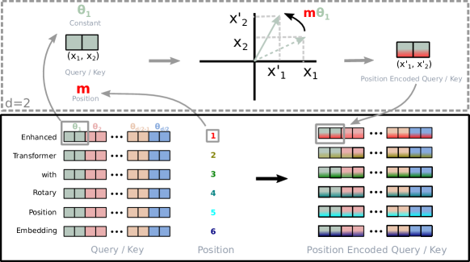

词嵌入只有语义 没有顺序
位置编码
「狗咬人」和「人咬狗」用的是同一批词。可对注意力来说，这两句话算出来的表示是一模一样的——它天生看不见顺序。位置信息必须由我们手工注入，而怎么注入，决定了模型能不能读懂 32K 的长文档。这一节从置换等变的严格证明讲到 RoPE 的旋转直觉，再讲透 PI / NTK / YaRN 这条外推技术线。
一图看懂
注意力的输入是一个集合而不是序列。把顺序信息喂进去有三条路：加到输入向量上（绝对位置编码）、加到注意力分数上（相对位置编码 / ALiBi）、或者把 Q 和 K 旋转一个与位置成正比的角度（RoPE）。第三条路赢了。
- 方案 A 绝对位置在输入端加一个位置向量
- 词嵌入 / 只有语义 没有顺序
方案 B 旋转 RoPE在每层对 Q/K 旋转 mθ- 词嵌入 / 只有语义 没有顺序
方案 C 偏置 ALiBi在注意力分数上按距离扣分- 词嵌入 / 只有语义 没有顺序
- 注意力现在能区分词序
- 方案 A 绝对位置 / 在输入端加一个位置向量
- 方案 B 旋转 RoPE / 在每层对 Q/K 旋转 mθ
- 方案 C 偏置 ALiBi / 在注意力分数上按距离扣分
先证明：注意力确实看不见顺序
这不是一句比喻，是可以严格写出来的性质。设输入序列矩阵 $X \in \mathbb{R}^{n \times d}$，每一行是一个 token 的向量。打乱顺序等价于左乘一个置换矩阵 $P$（每行每列恰有一个 1），即输入变成 $PX$。
看注意力分数矩阵会怎么变：
$$S' = \frac{(PXW^Q)(PXW^K)^\top}{\sqrt{d_k}} = P\,\frac{(XW^Q)(XW^K)^\top}{\sqrt{d_k}}\,P^\top = P S P^\top$$
也就是说，分数矩阵只是被同步地换了行和列。Softmax 是逐行做的，而换列不改变一行内元素的集合（只是重排），所以 $\text{softmax}(PSP^\top) = P\,\text{softmax}(S)\,P^\top$。再乘上同样被置换的 Value：
$$\text{Attn}(PX) = P\,\text{softmax}(S)\,P^\top P X W^V = P\,\text{softmax}(S)\,XW^V = P \cdot \text{Attn}(X)$$
最后一步用到 $P^\top P = I$。结论非常干脆：打乱输入，输出只是跟着打乱，每个 token 拿到的表示向量一个比特都没变。这个性质叫置换等变（permutation equivariant）。
用一个 3 词的例子体会
取序列「我 / 爱 / 你」，位置索引 1、2、3。不加位置编码时，「爱」这个 token 的 Query 会和「我」「你」的 Key 各打一次分。现在把顺序换成「你 / 爱 / 我」——「爱」的 Query 没变，「我」「你」的 Key 也没变，它们的点积当然也一个不变，Softmax 之后权重仍然是同样的两个数。
唯一变化的是这两个权重在矩阵里的列位置，而加权求和是不看列顺序的。于是「爱」在两句话里拿到的输出向量完全相同——模型无法判断谁施动、谁受动。
更麻烦的是，Transformer Block 里的其它部件也救不了场：前馈网络是逐位置独立作用的，LayerNorm / RMSNorm 也是逐位置的，残差连接是逐位置相加。整个网络自上而下都是置换等变的。所以在 "The dog bit the man" 里，dog 这个 token 拿到的最终表示，和在 "The man bit the dog" 里 dog 拿到的完全相同。
一句话直觉
没有位置编码的 Transformer 处理的不是句子，是一袋词。它知道这袋词里有什么，但不知道它们排成什么样。
展开：一个例外——因果掩码本身就携带顺序信息
上面的证明有个前提：注意力是全连接的。因果掩码一旦加进来，这个前提就破了——掩码矩阵是下三角的，它不满足 $M' = PMP^\top$ 仍是下三角。换句话说，掩码本身编码了「谁在谁前面」。
由此产生了一个反直觉的现象：decoder-only 模型即使完全不加位置编码（社区称为 NoPE），也能从掩码结构中隐式学到位置信息——最直接的线索是每个位置「能看到多少个 token」，这本身就是一个位置计数器。
但这不构成实践建议。隐式学到的位置感知较弱、训练更慢，长距离上也不够可靠。主流模型仍然显式使用位置编码，NoPE 更多是一个用来理解机制的有趣观察，在小模型与短序列上的表现研究得较多。
方法族全景：先看地图再看细节
位置编码这个领域名词很多，容易被绕晕。先把整片地图摊开，后面每一节就知道自己在哪：
核心主题位置编码方法族
01绝对位置
- 正弦余弦编码
- 零参数
- 原始 Transformer
- 可学习嵌入表
- BERT 与 GPT-2
- 超出上限完全失效
02相对位置
- 分数上的可学习偏置
- Shaw 等人的相对表示
- T5 的对数分桶
- 需要额外 n×n 张量
03旋转类
- RoPE
- 绝对操作 相对语义
- 逐层施加 不动 V
- rope_theta 是关键旋钮
04偏置类
- ALiBi
- 按距离线性扣分
- 每个头一个固定斜率
- 外推平缓
05隐式
- NoPE
- 只靠因果掩码
- 研究价值大于实用价值
另一个更有用的分类维度是「位置信息在什么地方被注入」。这直接决定了它和 FlashAttention 这类高效实现兼不兼容：
- 词嵌入 + 位置向量投影出 Q K 之后逐元素做 cos sin 乘加scores 上加 n×n 偏置注入点 1 输入端注入点 2 每层的 Q 与 K注入点 3 注意力分数
- 穿过全部 N 层信号会被逐层稀释
- 词嵌入 + 位置向量
分数矩阵形状不变高效算子无缝兼容- 投影出 Q K 之后 / 逐元素做 cos sin 乘加
需要额外张量与分块算子冲突- scores 上加 n×n 偏置
模型获得顺序感知- 注入点 1 输入端绝对位置编码
- 注入点 2 每层的 Q 与 KRoPE
- 注入点 3 注意力分数相对偏置 / ALiBi
绝对位置编码：最直接的办法
既然缺顺序信息，那就给每个位置准备一个专属向量，加到词嵌入上：$x_i \leftarrow \text{emb}(w_i) + \text{pos}(i)$。这类方案分两种。
正弦位置编码
原始 Transformer 用的是一组固定的三角函数，不含任何可训练参数：
$$PE_{(pos,\,2i)} = \sin\!\left(\frac{pos}{10000^{2i/d}}\right), \qquad PE_{(pos,\,2i+1)} = \cos\!\left(\frac{pos}{10000^{2i/d}}\right)$$
直觉是多针时钟：向量的不同维度对应不同的转速。$i$ 小的维度频率高，像秒针，几个 token 就转一圈，负责区分近距离；$i$ 大的维度频率低，像时针，波长可达上万个 token，负责标记大尺度位置。所有指针的读数合在一起，就唯一确定了一个位置——本质上是连续版的二进制计数。
把波长具体算出来最有说服力。取 $d=128$，第 $j$ 对维度的波长是 $\lambda_j = 2\pi \cdot 10000^{2j/d}$：
纵轴为对数刻度。数值由 $\lambda_j = 2\pi \cdot 10000^{j/64}$ 直接算出（$d=128$、base=10000），非实测数据。
| 维度对序号 $j$ | 角速度 $\theta_j$ | 波长（token 数） | 负责的尺度 |
|---|---|---|---|
| 0 | 1 | 约 6.3 | 紧邻词，相当于「秒针」 |
| 16 | 0.1 | 约 63 | 短句 / 从句范围 |
| 32 | 0.01 | 约 628 | 段落级 |
| 48 | 0.001 | 约 6283 | 章节级 |
| 63 | 约 0.000115 | 约 54000 | 整篇文档，相当于「时针」 |
看这张表就能理解一件重要的事：只有波长远小于上下文窗口的维度，才在训练中真正「转完过整圈」。$j=63$ 那一对，在 4K 训练窗口里总共只转了不到 $4096/54000 \approx 7.6\%$ 圈——它见过的角度区间极窄。这正是后面长度外推会崩掉的伏笔。
正弦编码还有一条漂亮的性质：$PE_{pos+k}$ 可以表示为 $PE_{pos}$ 的一个线性变换（就是旋转 $k$ 步），而且这个变换只和偏移量 $k$ 有关。理论上模型因此有可能学会利用相对位置。但注意这只是「有可能」——位置向量在输入端与语义向量相加之后，要穿过几十层的投影和非线性，这条线性关系能保留多少并没有保证。
可学习绝对位置
更省事的做法：直接建一张 $L_{max} \times d$ 的嵌入表，位置 $i$ 查第 $i$ 行，和词嵌入一样反向传播学出来。BERT 和 GPT-2 走的都是这条路，上下文上限分别锁死在 512 和 1024。
好处是简单、灵活，在训练长度内表现不比正弦差。坏处非常致命：位置 $L_{max}$ 之后根本没有对应的向量存在。想扩展上下文，只能加行重训，没有任何外推余地。
还有一个不那么明显的坏处：长尾位置训练不足。语料里大部分样本长度远小于 $L_{max}$，于是靠后的那些位置行被更新的次数极少，参数质量差。表现出来就是「同一个模型，输入越接近上限效果越差」。
绝对位置的共同短板
注意力真正想知道的往往不是「这个词在第 137 位」，而是「这两个词隔多远」。绝对编码把位置信息塞进输入端，让模型自己去做减法反推相对距离，既绕又不稳。而且加法注入的位置信号会在深层被语义信息逐渐淹没。
相对位置编码：直接建模距离
既然模型关心的是 $i - j$，那就别兜圈子。相对位置编码的思路是把位置信息从输入端搬到注意力分数上：
$$S_{ij} = \frac{q_i \cdot k_j}{\sqrt{d_k}} + b_{\,i-j}$$
其中 $b_{i-j}$ 是一个只依赖相对距离的可学习标量。T5 采用的是这个形式，并且做了分桶：近距离每个偏移单独一个桶，远距离按对数合并成大桶（距离 100 和 105 用同一个偏置）。这符合直觉——近处需要精确，远处只需知道「很远」。
分桶还顺带解决了一个问题：桶的数量是有限的，而距离是无限的。超出最大桶的距离全部落进「最远」那一个桶，于是形式上模型可以处理任意长度的输入，不会像可学习绝对位置那样直接查表越界。代价是超出训练范围后，所有远距离都被压成同一个偏置值，分辨率归零。
相对编码在质量上确实优于绝对编码，但它有个工程上的硬伤：需要一个额外的 $n \times n$ 偏置张量参与注意力计算。这与 FlashAttention 这类「分数矩阵永不落显存」的高效实现天然冲突，长序列下要么额外开销巨大，要么需要专门定制核函数。这是它没能成为主流的关键原因。
RoPE：旋转位置编码
RoPE 是当代几乎所有主流开源模型的标配。看不懂 RoPE 就读不了现代模型的注意力代码，所以这一节值得慢慢看。
核心直觉：不加，而是转
前面所有方案都在做加法。RoPE 换了个动作——旋转。
把 $d$ 维的 Query 向量两两配对，看成 $d/2$ 个二维平面上的点。在位置 $m$ 处，把第 $j$ 对在它所在的平面上逆时针旋转 $m\theta_j$ 弧度。位置越靠后，转得越多。Key 同样处理。
为什么这么做？因为旋转有一个加法不具备的性质：两个旋转向量的内积，只取决于它们的角度差。
$$\langle R_m q,\; R_n k \rangle = q^\top R_m^\top R_n k = q^\top R_{n-m}\, k$$
推导只用到旋转矩阵的两条基本性质：$R_m^\top = R_{-m}$（转回去）和 $R_a R_b = R_{a+b}$（转两次等于转和）。于是 $R_m^\top R_n = R_{n-m}$。
这个结果的分量非常足：我们用绝对位置 $m$、$n$ 做了操作，但注意力分数里出现的只有相对位置 $n-m$。既有绝对编码的实现简洁性，又自动获得相对编码的语义。
一句话直觉
给每个 token 的向量按位置「拧一个角度」。两个词打分时算的是内积，内积只认夹角之差——拧的绝对角度自动抵消，剩下的正好是它们的距离。

频率的选择
每一对维度的转速 $\theta_j$ 沿用了正弦编码的那套几何级数：
$$\theta_j = \text{base}^{-2j/d}, \qquad j = 0, 1, \dots, d/2 - 1$$
base 通常取 10000。$j=0$ 的那对转得最快（波长约 $2\pi$ 个 token），负责区分相邻词；$j$ 最大的那对转得极慢，波长可达数万 token，负责标记大尺度位置。这个 base 就是后面做长度外推时最重要的那个旋钮，在配置文件里通常叫 rope_theta。
base 调大会发生什么？所有 $\theta_j$ 变小，也就是所有维度都转得更慢、波长都变长。原本在 4K 就转完好几圈的中频维度，现在在 32K 才转完同样的圈数——等于把「位置刻度尺」整体拉长了。这就是 NTK-aware 缩放的物理含义。
为什么 RoPE 赢了
| 特性 | 说明 |
|---|---|
| 相对位置内建 | 不需要额外的偏置张量，相对性是内积运算的天然结果 |
| 兼容高效实现 | 只是对 Q、K 做一次逐元素的 cos/sin 乘加，分数矩阵形式完全不变，与 FlashAttention 无缝配合 |
| 不会被稀释 | 在每一层的 Q/K 上重新施加，而不是只在输入端加一次 |
| 不污染 Value | 只旋转 Q 和 K，V 保持原样。位置只影响「谁看谁」，不改变「看到的内容」 |
| 远程衰减 | 高频维度随距离快速振荡、正负相消，内积期望随距离增大而衰减，形成「越远越弱」的先验 |
| 零参数 | 纯确定性变换，不增加任何可训练参数 |
| 可事后调节 | base 与索引缩放都是推理期就能改的超参，给了长度外推一个几乎免费的入口 |
展开：RoPE 的复数形式与最小实现
把二维平面上的一对分量 $(x_{2j}, x_{2j+1})$ 看成复数 $z_j = x_{2j} + i\,x_{2j+1}$，旋转就退化成一次复数乘法：
$$\tilde{z}_j^{(m)} = z_j \cdot e^{i m \theta_j}$$
此时注意力分数是所有维度对的实部之和：
$$\langle R_m q, R_n k \rangle = \sum_{j} \mathrm{Re}\!\left[ q_j \overline{k_j} \; e^{i(m-n)\theta_j} \right]$$
可以直接看出：指数项里只有 $m-n$。写成实数形式，单个二维块的旋转就是
$$\begin{pmatrix} \tilde{x}_{2j} \\ \tilde{x}_{2j+1} \end{pmatrix} = \begin{pmatrix} \cos m\theta_j & -\sin m\theta_j \\ \sin m\theta_j & \cos m\theta_j \end{pmatrix} \begin{pmatrix} x_{2j} \\ x_{2j+1} \end{pmatrix}$$
import torch
def build_rope_cache(seq_len, head_dim, base=10000.0, device="cpu"):
# theta_j = base^(-2j/d),共 d/2 个频率
inv_freq = 1.0 / (base ** (torch.arange(0, head_dim, 2, device=device).float() / head_dim))
pos = torch.arange(seq_len, device=device).float()
angles = torch.outer(pos, inv_freq) # (seq_len, d/2)
return angles.cos(), angles.sin()
def apply_rope(x, cos, sin):
"""x: (B, h, n, d) —— 对 Q 或 K 施加旋转"""
x1, x2 = x[..., 0::2], x[..., 1::2] # 偶数位 / 奇数位配对
cos = cos[None, None, :, :]
sin = sin[None, None, :, :]
out1 = x1 * cos - x2 * sin # 二维旋转公式
out2 = x1 * sin + x2 * cos
return torch.stack([out1, out2], dim=-1).flatten(-2)注意实际框架里配对方式有两种约定：上面这种相邻配对（0::2 与 1::2），以及前后半配对（前 d/2 维与后 d/2 维两两组合）。两者数学等价，但权重不能混用——换实现时如果模型输出乱码，先查这里。
展开：一段可以自己验证的旋转不变性实验
RoPE 最核心的断言是「内积只取决于相对距离」。这一点可以在几行代码里亲手验证——把同一对 Q、K 放在位置 (0, 5) 和 (100, 105) 上，算出来的分数应该几乎相同：
import torch
d = 64
q = torch.randn(1, 1, 1, d)
k = torch.randn(1, 1, 1, d)
cos, sin = build_rope_cache(seq_len=200, head_dim=d)
def score_at(m, n):
qm = apply_rope(q, cos[m:m+1], sin[m:m+1])
kn = apply_rope(k, cos[n:n+1], sin[n:n+1])
return (qm * kn).sum().item()
print(score_at(0, 5)) # 相对距离 5
print(score_at(100, 105)) # 相对距离同样是 5
print(score_at(0, 7)) # 相对距离 7,应当明显不同前两行输出应该在浮点误差内一致，第三行则明显不同。如果前两行差得很远，说明你的 apply_rope 配对方式或索引切片写错了。这是调试 RoPE 实现最快的单元测试。
ALiBi：干脆只加一个距离惩罚
ALiBi 走了另一个极端：完全不碰词向量，只在注意力分数上按距离线性扣分。
$$S_{ij} = \frac{q_i \cdot k_j}{\sqrt{d_k}} - m_h \cdot |i - j|$$
$m_h$ 是每个注意力头一个的固定斜率（按头数取一组递减的几何级数），不可训练。斜率大的头只看得见很近的邻居，斜率小的头视野开阔——多头天然形成了从局部到全局的多尺度覆盖。
它的最大卖点是外推友好：因为它编码的不是「位置」，而是一条与训练长度无关的距离惩罚规则。序列变长时这条规则依然成立，不存在「没见过的位置」这回事，所以训练 2K、推理 8K 时退化远比原始 RoPE 平缓。
代价
这个惩罚是硬性且单调的：距离越远，分数被扣得越狠，没有例外。对于需要精确检索远处某个具体细节的任务（比如「大海捞针」式的长文档问答），这个先验就成了阻碍——模型被结构性地劝阻去看远处。这是 ALiBi 在长上下文模型中不如 RoPE 流行的主要原因。
长度外推：为什么 4K 的模型跑不了 32K
拿一个训练上下文 4K 的 RoPE 模型，直接喂 32K 输入，通常不是「效果稍差」，而是输出彻底崩坏——困惑度暴涨几个数量级，生成结果变成重复或乱码。原因值得拆开看：
- 角度进入了从未见过的区间。低频维度在训练中最多只转到 $4096\,\theta_j$；跑 32K 时角度是训练上限的 8 倍，落在完全没有梯度覆盖过的区域。模型对这些角度的响应是纯粹的外插，毫无保证。
- 注意力熵失控。序列变长后，Softmax 要在多得多的项上归一化。若 logits 的尺度没有相应调整，注意力分布会变得过于平坦——每个位置都「有点相关」，等于什么都没关注。
- 训练分布里就没有长依赖。这一点常被忽略：即便位置编码处理好了，如果预训练语料里几乎不存在跨越 3 万 token 的依赖关系，模型也没学过怎么用这么长的上下文。
针对前两点，发展出了一条清晰的技术线：
| 方法 | 核心做法 | 优点 | 代价 |
|---|---|---|---|
| 位置插值 PI | 把位置索引整体压缩：$m \to m \cdot \frac{L_{train}}{L_{target}}$，让长序列的角度挤回训练见过的范围 | 思路极简，少量微调即可生效 | 所有频率一视同仁地被压缩，高频维度分辨率下降，近距离的细粒度区分能力受损 |
| NTK-aware 缩放 | 不均匀插值：高频维度（管局部）基本不动，低频维度（管全局）大幅插值。工程上通常等价于调大 rope base | 保住了局部分辨率；免微调也能有可用效果 | 缩放系数需要按目标长度调，过度放大 base 会损害短序列表现 |
| YaRN | 按波长把维度分三档：波长远小于窗口的高频维不插值、远大于窗口的低频维完全插值、中间带做平滑过渡；并额外对注意力 logits 做温度缩放以补偿熵的变化 | 目前效果与成本平衡最好的主流方案，微调数据量需求也较低 | 超参更多，实现更复杂 |
这三者的关系是层层递进的：PI 发现「压缩位置能用」，NTK 指出「压缩不该一刀切」，YaRN 进一步给出了按波长分档的具体划分方式并补上了熵的修正。理解了这条线，再看各家模型 config 里的 rope_scaling 字段就不会陌生了。
三种缩放到底改了哪一行代码
抽象说完，落到实现上其实只有两个可动的量：位置索引和 base。下面这段把三种方案放在一起对比，一眼就能看出差别：
import torch
def rope_freqs(head_dim, base=10000.0):
return 1.0 / (base ** (torch.arange(0, head_dim, 2).float() / head_dim))
L_train, L_target = 4096, 32768
factor = L_target / L_train # = 8.0
pos = torch.arange(L_target).float()
# 原始:什么都不改,长序列的角度会跑出训练范围
inv_freq = rope_freqs(128)
angles_raw = torch.outer(pos, inv_freq)
# PI 位置插值:把索引压缩回训练范围,所有频率一视同仁
angles_pi = torch.outer(pos / factor, inv_freq)
# NTK-aware:不动索引,改 base。高频几乎不变,低频被显著拉长
ntk_base = 10000.0 * (factor ** (128 / (128 - 2)))
angles_ntk = torch.outer(pos, rope_freqs(128, base=ntk_base))
for name, a in [("raw", angles_raw), ("PI", angles_pi), ("NTK", angles_ntk)]:
# 看最高频那一对维度在末尾位置转到了多大角度
print(name, "最高频末端角度:", round(a[-1, 0].item(), 1),
"| 最低频末端角度:", round(a[-1, -1].item(), 4))跑一下就会发现：PI 把所有维度的末端角度都压到原来的 1/8，包括本来完全正常的高频维度——这就是它损害近距离分辨率的原因。NTK 则几乎保住了高频维度的角度，只把低频维度显著拉长。YaRN 在此基础上再对中间带做平滑并调整 logits 温度，代码更长但思路同源。
sequenceDiagram
autonumber
participant E as 工程师
participant C as 模型 config
participant T as 继续训练脚本
participant V as 长文本评测
E->>C: 设定目标长度 例如 4K 扩到 32K
E->>C: 选择缩放策略 PI 或 NTK 或 YaRN
C-->>E: rope_theta 与 rope_scaling 生效
E->>V: 先做免微调评测 探底
V-->>E: 长文本可用但短文本掉点
E->>T: 用少量长样本继续训练
T-->>E: 权重适配新的角度分布
E->>V: 复测长文本与短文本
V-->>E: 两端都达标才算完成
Note over E,V: 短文本回归测试常被忽略 却是最容易翻车的一步
timeline
title 上下文长度与位置编码方案的同步演进
2017 : 原始 Transformer 正弦编码 : 训练长度数百 token
2018 : BERT 与 GPT-2 可学习绝对位置 : 上限锁死 512 与 1024
2019 : T5 相对位置分桶 : 质量提升但与高效算子冲突
2021 : RoFormer 提出 RoPE : 绝对操作换来相对语义
2022 : ALiBi 线性距离偏置 : 主打训练短推理长
2023 : PI 与 NTK 与 YaRN 相继出现 : 上下文从数千扩到十万量级
工程提醒
扩展上下文时，KV Cache 的显存占用是与序列长度成正比增长的。4K 扩到 128K，缓存开销涨 32 倍，常常先于模型质量成为瓶颈。位置编码只解决「能不能理解这么长」，不解决「装不装得下」——后者见 KV Cache 原理与优化。
四种方案横向对比与选型
把前面讲的四类方案摆在一张表里，选型时对着看即可：
| 维度 | 正弦绝对 | 可学习绝对 | 相对偏置（T5） | RoPE | ALiBi |
|---|---|---|---|---|---|
| 可训练参数 | 无 | $L_{max} \times d$ | 少量桶偏置 | 无 | 无 |
| 注入位置 | 输入端一次 | 输入端一次 | 注意力分数 | 每层 Q / K | 注意力分数 |
| 相对位置语义 | 理论上有，实际不保证 | 无 | 显式建模 | 内积自动得到 | 显式建模（单调） |
| 兼容 FlashAttention | 兼容 | 兼容 | 冲突 | 无缝 | 需定制但可行 |
| 免微调外推 | 差 | 不可能 | 有限（远距离全落一个桶） | 差，需缩放 | 较好 |
| 加缩放后外推 | — | — | — | 好（PI / NTK / YaRN） | 本身即可 |
| 远距离精确检索 | 一般 | 一般 | 一般 | 好 | 受硬性惩罚抑制 |
| 今天的地位 | 教学价值 | 历史遗留 | 特定模型仍用 | 事实标准 | 小众但有其场景 |
结论其实很简单：新做一个 decoder-only 模型，直接上 RoPE，把 rope_theta 按目标上下文长度设好。只有在明确追求「训练短、推理长且不做任何微调」这一场景时，ALiBi 才值得考虑。
踩过就记住的几个坑
| 现象 | 可能原因 | 排查方向 |
|---|---|---|
| 换了推理框架后模型输出乱码 | RoPE 配对约定不一致（相邻配对 vs 前后半配对） | 对同一组权重比对两种实现的首层输出 |
| 扩上下文后长文本变好、短文本变差 | 缩放系数过大，高频维度分辨率被牺牲 | 改用 NTK / YaRN，并做短文本回归测试 |
| 长文本困惑度突然暴涨 | 超出训练长度且未做任何缩放 | 检查 config 里的 rope_scaling 是否真的生效 |
| KV Cache 复用后位置错乱 | 缓存里存的是已旋转的 K，拼接时位置索引未连续 | 确认 K 的旋转与其绝对位置一一对应 |
| 加了 padding 后短句效果变差 | 位置索引从 PAD 开始计数 | 确保位置索引跳过左侧 padding |
最隐蔽的一个坑
KV Cache 里缓存的 K 是已经旋转过的。这意味着一旦缓存建立，每个 K 就和它当时的绝对位置绑死了。如果你在推理中途做了 KV 裁剪、滑动窗口或者拼接多段缓存，位置索引必须保持与旋转时一致，否则模型看到的相对距离会整体错位——症状是生成内容突然「跳戏」，但不会报任何错。
要点速查
- 前提：注意力是置换等变的，$\text{Attn}(PX) = P\,\text{Attn}(X)$。FFN、Norm、残差全是逐位置的，救不了场，位置必须显式注入。
- 三个注入点：输入端（绝对编码）、每层 Q/K（RoPE）、注意力分数（相对偏置 / ALiBi）。注入点决定了与高效算子的兼容性。
- 正弦编码：固定三角函数，多针时钟式的连续二进制计数，零参数。$d=128$ 时波长从约 6 到约 54000 个 token。
- 可学习绝对位置：嵌入表，简单有效，但超出 $L_{max}$ 完全无解（BERT 512 / GPT-2 1024），且尾部位置训练不足。
- 相对位置编码：直接在分数上加 $b_{i-j}$（T5 分桶），质量好，但需要额外 $n \times n$ 张量，与 FlashAttention 冲突。
- RoPE（重点）：按位置旋转 Q、K。$\langle R_m q, R_n k\rangle = q^\top R_{n-m} k$，绝对操作换来相对语义；逐层施加、不动 V、兼容高效核、零参数。
rope_theta是外推的关键旋钮。 - ALiBi：分数减 $m_h|i-j|$，零参数、外推平缓，但对远程精确检索有硬性抑制。
- 外推三级跳：PI（均匀压缩）→ NTK-aware（按频率不均匀，即调大 base）→ YaRN（按波长分三档 + logits 温度补偿）。
- 外推还有第三个瓶颈：训练语料里本来就没有超长依赖，位置编码修好了也补不上这一课。
- 常见坑：RoPE 有相邻配对与前后半配对两种实现约定，数学等价但权重不通用；KV Cache 里的 K 已带位置，裁剪拼接时索引必须连续。
参考文献与延伸阅读
- Attention Is All You Need — 正弦位置编码的原始定义与设计动机 · arXiv:1706.03762
- Self-Attention with Relative Position Representations — 相对位置编码的开创性工作 · arXiv:1803.02155
- Exploring the Limits of Transfer Learning with a Unified Text-to-Text Transformer — T5 论文，含对数分桶式相对位置偏置 · arXiv:1910.10683
- RoFormer: Enhanced Transformer with Rotary Position Embedding — RoPE 原始论文，含完整推导与远程衰减性质 · arXiv:2104.09864
- Train Short, Test Long: Attention with Linear Biases Enables Input Length Extrapolation — ALiBi 原始论文 · arXiv:2108.12409
- Extending Context Window of Large Language Models via Positional Interpolation — 位置插值 PI · arXiv:2306.15595
- YaRN: Efficient Context Window Extension of Large Language Models — 按波长分档的插值方案与 logits 温度补偿 · arXiv:2309.00071
- The Impact of Positional Encoding on Length Generalization in Transformers — 系统对比各类位置编码的长度泛化能力，含 NoPE 观察 · arXiv:2305.19466
权威延伸资料
围绕“位置编码”继续深入
本章逐件拆开 Transformer：注意力、因果掩码、位置编码、归一化、前馈网络和残差连接，并说明它们如何组成 decoder-only LLM。
阅读提示：读架构图时始终追踪三条信息流：token 表示、位置关系和残差主干；任何变体都可以放回这三条流里比较。
- Attention Is All You Need ↗
注意力和 Encoder–Decoder Transformer 的原始定义，适合作为公式与架构的基线。
- The Annotated Transformer ↗
将原论文逐行翻译成 PyTorch 实现，适合把 Q/K/V、mask、残差和学习率调度对应到代码。
- Scaled Dot Product Attention ↗
说明 SDPA 的数学定义、mask 语义与后端选择，是核对实际 API 行为的权威入口。
- RoFormer: Enhanced Transformer with Rotary Position Embedding ↗
RoPE 的原始论文，重点理解旋转后内积为何自然携带相对位置信息。
- Root Mean Square Layer Normalization ↗
RMSNorm 的来源和计算简化，帮助比较 LayerNorm、RMSNorm 以及 Pre-Norm 结构。
资料优先选用原始论文、官方文档、大学课程和公共机构材料；链接按 2026-08-10 检索，具体版本以来源页面为准。
主题级技术深化
围绕“位置编码”继续深入
发展脉络
位置表示从绝对正弦与可学习 embedding，发展到相对位置、RoPE、ALiBi 及其长上下文缩放，目标从“知道位置”转向“可外推关系”。
机制抓手
RoPE 按二维对子旋转 Q/K，使内积显式依赖相对位移；频率基底、position id 和 cache offset 必须在训练与增量推理间一致。
工程权衡
更强外推往往牺牲短程分辨率或需要继续训练；支持窗口、训练窗口和可靠窗口不能写成同一个数字。
前沿观察
位置插值、NTK/YaRN 缩放和分段频率方案持续演进，评价应覆盖不同深度位置与跨段推理。
实践检查对一组二维 Q/K 手算两个位置的 RoPE 旋转和点积，并验证增量 decode 的 position offset。